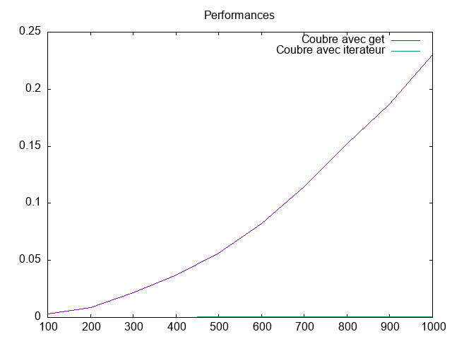

TP-Iterateurs¶
Etat du TP¶
Date : 17 / 03 / 2021
Réponses aux questions¶
1. Première phase : la liste doublement chaînée¶
ils sont bien implementé dans listliterator.py
2. Deuxième phase : ajout des itérateurs¶
Parcours avec des iterateurs :¶
ils sont bien implementé dans listliterator.py
Insertion avec des itérateurs :¶
le fonction add est bien implementé (doublement chaînées).
Itérateurs à partir de la queue :¶
ils sont bien implementé dans listliterator.py et le test 9 est bien implémenté.
Suppression avec des itérateurs :¶
1. Oui, il supprimera l’élément de l’itérateur et après la suppression, l’itérateur passera au suivant ou None. 2,5. ils sont bien implementé 3. pour interdira deux appels à remove successifs 4. * lis = List() * for i in reversed(range(6,10)): * lis.cons(i) * for j in reversed(range(5)): * lis.cons(j) * it = lis.get_listiterator() * while it.hasNext(): * it.remove()
Performance de l’accès au i-ème élément :¶
la fonction get et test 12 sont bien implementé.
Performance get et iterateurs
